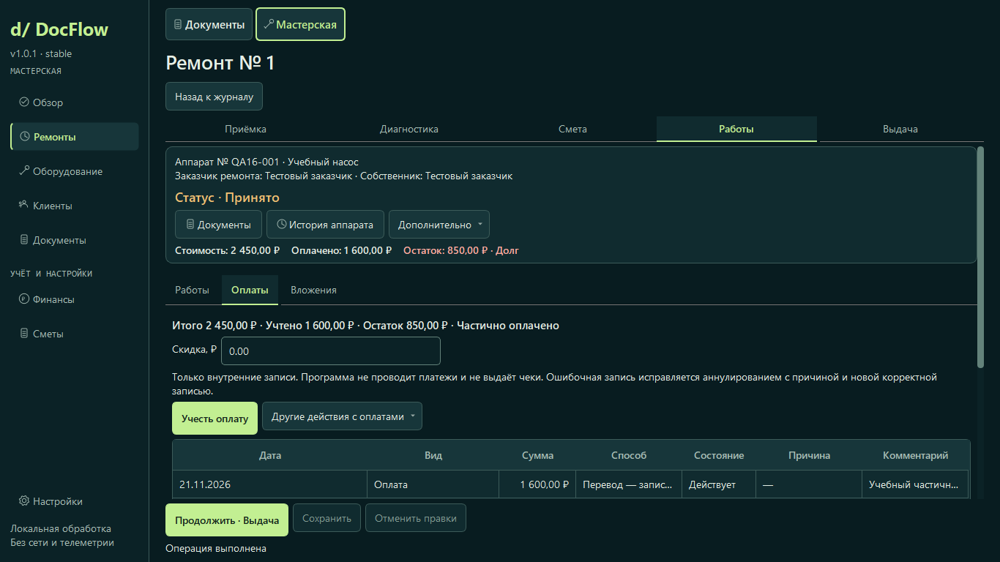

DOCFLOW / ATELIER / 21.11.2026
Три характера.
Один профессиональный инструмент.
Это визуальные направления маркетингового сайта. Миниатюры A и B — иллюстрации подачи, C содержит настоящий экран кандидата 1.0.1 на учебных данных. Реализованное направление A находится в сайте.
A · Industrial Atelier
ВЫБРАНО ДЛЯ РЕАЛИЗАЦИИДокументы —
без ручного
копирования.
Excel или CSV превращается в комплект Word-документов. В ваших шаблонах, на вашем компьютере.
Скачать бесплатно ↗на услугуКлиент Демо Клиент АУслуга Настройка рабочих местСумма 12 500 ₽
Контраст тёмного рабочего пространства и светлого результата, точная типографика и сдержанный лайм. Понятная связь с Core, достаточная свобода для рассказа о Service.
B · Technical Journal
РЕДАКЦИОННЫЙ АЛЬБОМПорядок
в каждой
записи.
Ваши данные, привычные формы и последовательный процесс работы.
Познакомиться с DocFlowв готовую форму.Сначала исходные данныеЗатем сопоставление и проверкаВ результате комплект DOCX
Спокойная редакционная подача, бумага и антиква. Сильная ассоциация с документами, но слабее преемственность с тёмной программой и индустриальным направлением.
C · Workshop OS
ПРОДУКТ В ЦЕНТРЕКаждый ремонт.
Весь контекст.
Аппарат, работы и расчёты рядом. История сохраняется от обращения к обращению.

Компактная продуктовая подача с маршрутом и крупным настоящим экраном. Хорошо объясняет Service, но главная страница становится слишком похожа на рабочее приложение и требует больше контекста для Core.
Почему Industrial Atelier
Сильнее всего соединяет предпочтительное тёмное направление, точность профессионального ПО и ясный результат. Из B сохранён редакционный ритм, из C — внимание к настоящим экранам и следующему действию. Сайт объясняет продукт через задачи и результат, затем предлагает загрузку или обсуждение настройки.
| Критерий | A | B | C |
|---|---|---|---|
| Понятность первого знакомства | Высокая | Высокая | Средняя |
| Связь с DocFlow | Высокая | Средняя | Высокая |
| Баланс Core / Service | Высокий | В пользу Core | В пользу Service |
| Мобильная композиция | Простая | Простая | Требует упрощения |
Оценка пригодности — дизайнерское суждение, не результат пользовательского исследования.
Открыть реализованный сайт ↗